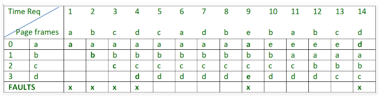

Optimal Page replacement
In this algorithm, pages are replaced which are not used for the longest duration of time in the future. Let us consider page reference string 7 0 1 2 0 3 0 4 2 3 0 3 2 and 4 page slots.- Initially all slots are empty, so when 7 0 1 2 are allocated to the empty slots = 4 Page faults
- 0 is already there so = 0 Page fault
- when 3 came it will take the place of 7 because 8it is not used for the longest duration of time in the future = 1 Page fault
- 0 is already there so = 0 Page fault
- 4 will takes place of 1 = 1 Page Fault
Example : 2, Let us have a reference string: a, b, c, d, c, a, d, b, e, b, a, b, c, d and the size of the frame be 4.

There are 6 page faults using optimal algorithm.
- Optimal page replacement is perfect, but not possible in practice as operating system cannot know future requests. The use of Optimal Page replacement is to set up a benchmark so that other replacement algorithms can be analyzed against it.